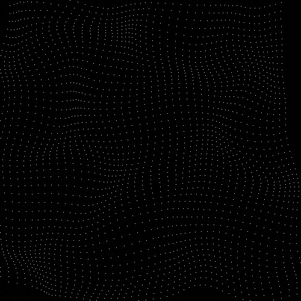

Source Code
Source Code
██████╗ ███████╗███╗ ██╗███████╗██████╗ █████╗ ████████╗██╗██╗ ██╗███████╗
██╔════╝ ██╔════╝████╗ ██║██╔════╝██╔══██╗██╔══██╗╚══██╔══╝██║██║ ██║██╔════╝
██║ ███╗█████╗ ██╔██╗ ██║█████╗ ██████╔╝███████║ ██║ ██║██║ ██║█████╗
██║ ██║██╔══╝ ██║╚██╗██║██╔══╝ ██╔══██╗██╔══██║ ██║ ██║╚██╗ ██╔╝██╔══╝
╚██████╔╝███████╗██║ ╚████║███████╗██║ ██║██║ ██║ ██║ ██║ ╚████╔╝ ███████╗
╚═════╝ ╚══════╝╚═╝ ╚═══╝╚══════╝╚═╝ ╚═╝╚═╝ ╚═╝ ╚═╝ ╚═╝ ╚═══╝ ╚══════╝
██████╗ ███████╗███████╗██╗ ██████╗ ███╗ ██╗
██╔══██╗██╔════╝██╔════╝██║██╔════╝ ████╗ ██║
██║ ██║█████╗ ███████╗██║██║ ███╗██╔██╗ ██║
██║ ██║██╔══╝ ╚════██║██║██║ ██║██║╚██╗██║
██████╔╝███████╗███████║██║╚██████╔╝██║ ╚████║
╚═════╝ ╚══════╝╚══════╝╚═╝ ╚═════╝ ╚═╝ ╚═══╝
This website serves as a portfolio describing my work done for the CODE University Module Generative Design.
First, I have to mention that this website is split into two parts. The first part is on this page and quickly describes the work I did in the Processing Learning Units. On the following pages, I'll then describe the creation process of a new sketch that I made over the last two weeks. The source code can be found on Github which is linked at the top of each page. I tried to build this website as barebone as possible so that no big web development framework distracts from the simplicity of the sketches.
P5.JS can sometimes cause problems as the website fails to load the sketches. I only experienced during development but if it should happen you have to force quit the website and try to reload. You can close the browser for that or otherwise I can recommend the build-in task manager that the google chrome browser has. This lets you easily close specific tabs that don't respond anymore instead of closing the whole browser. I try to resolve this issue as soon as possible.
The following artworks are inspired by an article that my module coordinator Habu gave about being able to loop output from a noise function. The idea is to take in the time as an extra parameter into the noise function and modify it in such a way that it loops back around to the value it stated on. For a more in-depth explanation, I recommend the linked article.
With the first sketch, I wanted to have a simple one to focus on getting warm with the concept of loopable noise. I took the output of the noise function and mapped it to 5 different shades of grey.
And from the GIF down below you can already see that it worked. I recorded roughly 100 frames of the above sketch, created a GIF from it that loops forever and you don't see a jump in the frames when the GIF starts over again.

As a next step, I wanted to do something fancier with it. I played around a little bit and ended up with the following sketch where I calculate to different noise values for each point in the grid and then move that point in x and y direction by these two noise values. I was surprised by how well it looks and the amazing 3D effect you get. I then created two more variants of this sketch which you can see by changing the display options below the sketch. The first one just colors each point each frame with a random color. I don't like it that much. The second one was a crazy idea to try putting a text on this grid. With the help of a second sketch, I calculated the list of every point in the grid that needed to be colored differently. I'm not super happy with it because the text doesn't look too good on it but it still worked out quite ok.
Here you can see that also this sketch is loopable.
And the last one isn't loopable but I saw a jersey at H&M which showed this hologram-like 3D terrain and I wanted to see how I can achieve that with my current sketch. I took some time but I finally ended up with this GIF.